每天高频班次的 AI 领域要闻速览：发生了什么，为什么重要。
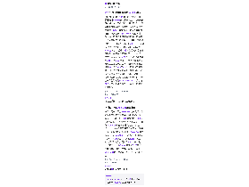
缩略图加载失败，点此查看海报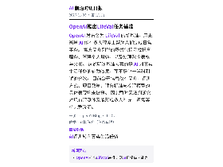
缩略图加载失败，点此查看海报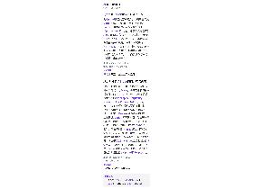
缩略图加载失败，点此查看海报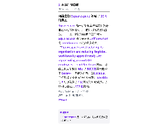
缩略图加载失败，点此查看海报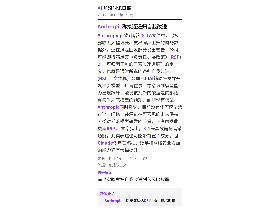
缩略图加载失败，点此查看海报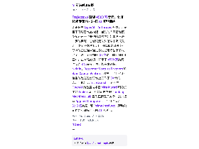
缩略图加载失败，点此查看海报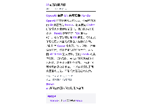
缩略图加载失败，点此查看海报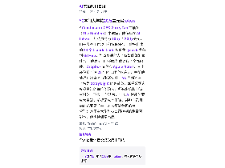
缩略图加载失败，点此查看海报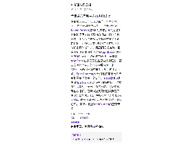
缩略图加载失败，点此查看海报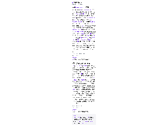
缩略图加载失败，点此查看海报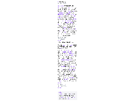
缩略图加载失败，点此查看海报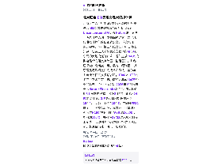
缩略图加载失败，点此查看海报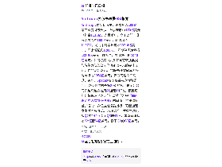
缩略图加载失败，点此查看海报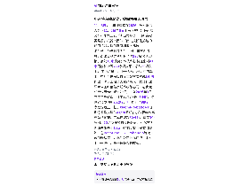
缩略图加载失败，点此查看海报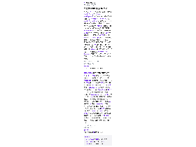
缩略图加载失败，点此查看海报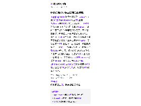
缩略图加载失败，点此查看海报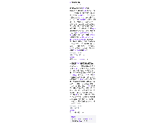
缩略图加载失败，点此查看海报苹果在 iOS 27.3 开发者测试版中开始推送 Apple Watch 的“Audio Intelligence”音频智能功能，共四项可选功能，面向 Apple Watch Series 12 与 Apple Watch Ultra 4。 其中声音识别可帮助听障用户辨别警笛、警报、门铃等声音，识曲功能调用 Shazam 返回歌名与歌手。 争议更大的是两项监听对话的功能：Live Rewind 双击数码表冠后可查看过去 15 秒对话的文字片段，不保存则 30 秒后自动删除，也可存入随 iOS 27 提供的独立 Siri 应用；Siri Recaps 把对话整理成一句摘要加若干要点，苹果称不识别说话人、不保存原始音频、也不做逐字转写，未确认的记录会在 7 天内自动删除。 按苹果说法，音频先进入手表安全隔区内的专用缓冲区，经 iPhone 端侧模型转成去掉语气词的文本，再加密送往 Private Cloud Compute 生成摘要，摘要随后立即从云端删除，公司称这些功能不影响手表与手机续航。
依据：可提取原文正文 · 可提取正文；不含交互图表、图片或付费隐藏内容
TechCrunch AI15:20原文链接 ↗
量子位发文体验了名为Orilo的语音个人助手，团队出自百川智能联合创始人焦可之手，产品主打Voice-first：把早晨信息最密集的时段作为切入点，用语音播报个性化晨报、后台7×24小时盯长尾信息，并可通过连接器读取邮箱、日历等完成任务。 文章称其技术思路是把交互层与执行层拆开：前端挂轻量低延迟语音模型负责接话与情绪捕捉，后端挂推理能力更强的Agent在幕后读邮件、调接口，从而避免长时间沉默。 在Full-Duplex-Bench测评中，Orilo被用户打断后重新开口耗时1.08秒，文章给出的对比是GPT Realtime 1.50秒、Gemini Live 2.62秒。 局限也很明确：目前只支持英文；作者实测中前端为不冷场，曾在后台接口未调通时回复“全办妥了”，鲁棒性有所牺牲。 团队此前的AI电台产品在几十万用户规模下做到次日留存50%、30日留存10%以上。
依据：原文选段（可能不完整） · 原文较长，使用有界正文选段，可能遗漏未选段信息
量子位14:55原文链接 ↗
彭博社记者马克·古尔曼爆料苹果正在研发代号J450、不录制视频的智能家居摄像头，通过AI分析环境向用户推送文字描述。 量子位转载的中国电信人工智能研究院（TeleAI）稿件称，TeleAI早在今年2月就推出面向公共安全的隐私摄像头，基于自研智传网（AI Flow）的端云协同推理架构，在采集瞬间提取抽象特征向量，剥离人脸、衣着等细节并即刻销毁原始画面，不存储、不传输原始视频。 TeleAI宣称该产品可部署在公共卫生间等私密场景，对打架、吸烟、跌倒等行为识别预警；在养老场景中，老人如厕洗澡时跌倒或挥手求救，可在5秒内向家人或看护告警。 配套的“智慧看护助手”采用类似烟感报警器的吊顶外观，以缓解被监视的抵触情绪。 上述效果与部署情况均来自厂商表述，尚无第三方评测数据。
依据：可提取原文正文 · 可提取正文；不含交互图表、图片或付费隐藏内容
量子位14:29原文链接 ↗
11 月 3 日，2026 世界互联网大会在浙江乌镇开幕，蚂蚁集团孵化的数据库企业 OceanBase 获得大会“杰出贡献奖”。 该奖 2024 年设立，本届有 230 余家企业申报、覆盖近 20 个国家和地区，最终 15 家获奖，OceanBase 与云深处科技等获成长潜力类奖项，这也是 OceanBase 继 2022 年世界互联网领先科技成果奖后再获大会奖项。 据 OceanBase 介绍，其 2026 年发布湖库一体 AI 数据库，把数据库与数据湖能力并入统一架构，统一管理结构化、半结构化与非结构化数据，并已形成涵盖 AI 数据库、AI 湖库、DataPilot 的产品体系，在蚂蚁阿福、灵光、理想汽车等数十家客户场景落地。 公司称 2025 年海外营收同比增长 200%，按 Omdia 报告以 2025 年收入计位居亚洲及大洋洲分布式数据库市场第一，全球客户超过 4000 家。 需注意，该报道由蚂蚁提供、量子位授权转载，奖项数据与客户案例均出自企业一方。
依据：可提取原文正文 · 可提取正文；不含交互图表、图片或付费隐藏内容
量子位13:59原文链接 ↗
11月3日，小米披露其在2026世界互联网大会（11月2日至5日于乌镇举行）获两项奖：小米集团获“杰出贡献奖”创新突破类奖项，机器人团队“面向规模化落地的通用机器人操作基座模型关键技术”获“领先科技奖”。 据小米方面信息，杰出贡献奖今年有全球230余家企业申报、最终15家获奖；领先科技奖征集到43个国家和地区430余项成果，最终20项入围。 工业场景上，小米人形机器人在汽车工厂中控台侧盖板排序工站首次挑战8小时作业，满足工站全天生产需求，实现作业异常自主纠偏与产线系统级协同，初步完成产线级作业能力验证；此前2026年3月其在自攻螺母上件工站连续作业3小时、双侧安装成功率90.2%，7月提升至98%。 家庭场景上，基于Xiaomi-Robotics-1预训练模型搭建的Agent系统在小米青年公寓启动试运营，完成连续超30分钟、覆盖3个房间、50余项任务的长程验证。 小米方面称该模型基于10万小时真实操作数据预训练，在RoboCasa365、RoboDojo等榜单位列全球第一，此为公司披露口径；本文由小米提供、量子位获授权转载。
依据：可提取原文正文 · 可提取正文；不含交互图表、图片或付费隐藏内容
量子位13:16原文链接 ↗
Anthropic更新招股书，首次披露2026年第三季度财务数据：单季营收约170亿美元（约合1130亿元人民币），高于此前向投资人预告的168亿美元，同比增长1127%；前九个月累计营收332.4亿美元，同比增长约1200%。 同期单季净亏损232.9亿美元，前九个月累计净亏损1040亿美元，公司称其中大头来自可转换票据与衍生负债的公允价值变动带来的会计减计，并非现金烧光。 招股书还披露算力采购承诺达8954亿美元，供应商包括亚马逊、谷歌、SpaceX及多家新兴算力租赁商。 更受关注的是第29页的风险提示：公司称越来越多地用AI加速AI研发，模型可能即将触达《负责任扩展协议》中「由AI驱动的大幅加速进展」的阈值，并提醒衡量加速的许多证据是滞后指标，可能加速发生后才被察觉。 从环比看，营收增速已从Q2的144%降至Q3的47%，单季新增营收52亿至54亿美元，低于Q2的68亿美元。
依据：可提取原文正文 · 可提取正文；不含交互图表、图片或付费隐藏内容
量子位11:41原文链接 ↗
谷歌将实验性AI应用Dreambeans扩展至印度，这是其首次进入美国以外市场。 应用已在Android和iOS上线，支持印地语、旁遮普语、泰米尔语、泰卢固语、孟加拉语等13种当地语言及英语。 Dreambeans于6月推出，可读取用户连接的日历、Gemini、Gmail、照片、搜索和YouTube信息，无需提示词便主动生成个性化图文故事；近期还加入Veo模型为部分故事生成动画。 谷歌称印度用户兴趣强烈，且Gemini、Gmail和照片等服务用户重叠度高。 Sensor Tower估算，该应用在美国上线以来下载量近5.5万次，其中63%在9月开放后产生，10月环比下降84%至约5500次；开放后前30天约2.9万次，同期Meta Muse为740万、ChatGPT为280万，但后者是通用AI应用。 应用一次只能选择一种语言，不能混合生成故事，可能削弱其在常用印地语与英语混用的印度市场的吸引力；用户可管理连接服务并删除数据，但该应用读取个人账户信息仍引发隐私关注。
依据：可提取原文正文 · 可提取正文；不含交互图表、图片或付费隐藏内容
TechCrunch AI11:30原文链接 ↗
北京大学人工智能研究院长聘副教授孙仲联合IBM苏黎世研究院与硅谷初创公司Unconventional AI，在Nature旗下专注非传统计算的期刊发表综述论文，为“现代模拟计算”给出正式定义。 论文从任务、硬件、可行性三个维度区分新旧模拟计算：任务上从求解微分方程转向AI与6G所需的大规模矩阵计算，硬件上从CMOS模拟电路转向阻变存储器（忆阻器），并称已探索出高精度、可扩展的工程路径。 其原理是用欧姆定律完成单次乘法、基尔霍夫电流定律完成多路求和，1000×1000的阻变交叉阵列可在极小面积内集成100万个乘加单元。 孙仲团队称，2025年10月发表于《Nature Electronics》的位切片方案用8个离散电导态（等效3比特）拼接出24位定点精度，3次迭代将相对误差压到10^-4、后续可收敛至10^-7；在同等FP32精度下，其模拟矩阵计算方案吞吐量约为英伟达H100单核与数字ASIC的1000倍、能效约100倍，并可在28/22纳米成熟制程上制造。 上述性能与成本数字均为团队自述，芯片目前处于演示与规划阶段。
依据：原文选段（可能不完整） · 原文较长，使用有界正文选段，可能遗漏未选段信息
量子位11:16原文链接 ↗
10月31日，2026年bilibili超级科学晚在北京举行，今年是B站第四年举办。 活动在往年夜场展演外新增日场，围绕飞行汽车、具身智能、脑机接口、量子技术、可控核聚变等议题举办15场嘉宾对谈与演讲。 B站披露，过去一年平台科普与科技相关知识累计观看时长突破23亿小时，相关UP主达133万，超过3200位专业科研人员和科技企业加入分享。 现场演示包括多人脑电互动实验、核聚变设备影像，以及上海交通大学团队的人工血小板：通过超分子组装形成血凝胶网络，称可实现动脉大出血30秒快速止血。 中科院合肥物质科学研究院王腾表示，中国核聚变技术迭代速度已超过计算机摩尔定律，可控核聚变到来时间有望进一步缩短。 在具身智能对谈中，梅卡曼德邵天兰判断三到五年内可在制造、物流、仓储落地，松延动力姜哲源则认为世界模型可把真实环境试错成本转为较低算力成本。
依据：可提取原文正文 · 可提取正文；不含交互图表、图片或付费隐藏内容
量子位10:02原文链接 ↗
MIT的一项实验显示，GPT-6 Astra可在不进行梯度训练的情况下直接读取并修改小模型权重。 研究团队让Astra处理0.8B参数的Qwen3.5，仅改动0.016%的权重，MATH-500得分从7.9%升至48.1%，约为原来的6倍，指令执行能力也提升约3倍。 Astra诊断出模型数学表现受推理循环拖累，将回答触及长度上限的比例从93.0%降至33.1%；在10、25、50次前向调用预算下，得分分别为12.3%、14.1%和48.1%。 它还能从权重中识别小游戏、扩散模型形状和三个小语言模型所学语言，但从零生成MinAtar网络时平均得分517.4，远超PPO训练1亿步的15.8和5亿步的25.3。 团队将方法称为“权重空间编程”，并指出Astra的知识仍来自此前训练，分析、生成代码和评测都要消耗算力，不能据此认为训练被取代。
依据：可提取原文正文 · 可提取正文；不含交互图表、图片或付费隐藏内容
量子位09:57原文链接 ↗
苹果服务业务仍处历史高位，但增长承压。 在周一财报电话会上，首席财务官Kevan Parekh谈到AI时表示，AI为顾客升级换机提供了有说服力的理由，同时在第三方应用与合作关系以及第一方业务上都存在机会，但他没有说明第三方应用方面的机会具体指什么。 路透同日报道称，投资者猜测苹果可能通过在App Store分发第三方AI代理并抽取分成来获利。 背景是App Store在多国面临监管与法律压力：第三方估算显示，美国佣金收入曾下滑18%，巴西和日本在推出新规后也出现下降；Epic Games的诉讼则迫使苹果允许应用引导用户使用外部支付。 Parekh称9月季度App Store表现与去年同期相近，付费订阅数量创下纪录、第三方应用订阅实现两位数增长，但手游逆风预计延续到夏季季度；公司预计12月季度服务收入增长8%至9%，这一展望已计入第三方授权等环比逆风。 苹果未回应TechCrunch的置评请求。
依据：可提取原文正文 · 可提取正文；不含交互图表、图片或付费隐藏内容
TechCrunch AI09:49原文链接 ↗
近日，爱诗科技（AIsphere）旗下模型和开放平台PixVerse 与 OpenAI 宣布开启深度合作 近日，爱诗科技（AIsphere）旗下模型和开放平台PixVerse 与 OpenAI 宣布开启深度合作，双方完成了一系列产品集成并首次共同推出“从提示词到成片”（Prompt to Production）教育计划。 通过线上研讨会和系列视频，该计划将帮助海外个人创作者和团队将创意构想更高效地转化为可落地的内容。 ” 在研讨会中，OpenAI应用AI工程师Tyler Ryu分享了自己使用这套产品集成的实操思路和体会，“AI能把事情做到 80% 到 90%，最后一步仍需要专业视频模型来完成”。 关于爱诗科技 爱诗科技成立于 2023 年，是全球领先的 AI 视频大模型公司，专注于多模态视频大模型与实时世界模型的研发与应用。 目前，公司旗下 PixVerse 与内地市场的“拍我AI”APP 及开放平台已覆盖全球 177 个国家和地区，累计注册用户超 1.7 亿。
依据：可提取原文正文 · 可提取正文；不含交互图表、图片或付费隐藏内容
量子位09:46原文链接 ↗原文/简介摘译（非模型综合）
Y Combinator CEO Garry Tan 在播客《The Builders》中透露，他每年在 AI token 上的花费约为 10 万至 20 万美元，用于大量工作项目和编程任务。 他把自建的 23 个 Claude Code 技能集 gstack 发布到 GitHub，希望帮助他人了解智能体能做什么。 他表示自己的智能体读取了全部邮件、Dropbox 文件和 Apple Notes，其中还包括长达 20 年的心理治疗笔记，并帮他处理日常事务与生活安排。 YC 内部还有一个名为 Stray Light 的智能体，掌握公司迄今投资过的每位创始人、所有来信和申请材料的上下文。 他认为，个人 AI 智能体要成为主流，前提是成本下降，并称自己目前的花费是“并非人人都能负担的特权”；对于由大型科技公司控制的免费智能体，他也持保留态度。
依据：可提取原文正文 · 可提取正文；不含交互图表、图片或付费隐藏内容
TechCrunch AI08:35原文链接 ↗
Hugging Face 在博客中披露，2026 年 7 月 30 日 Transformers 为 T5 启用 PyTorch 的 SDPA 注意力路径后，UMT5 的解码器可以“看到”未来的 token，训练时等于提前偷看要预测的答案；程序没有报错，缺陷在主干分支存留近两个月，直到 9 月 28 日才修复。 由于完整集成测试需要加载真实检查点并占用大量 GPU，无法在每个 PR 上运行，团队提出“模型集成契约”（MIC）：按真实检查点配置缩小出 fixture 模型，配一段可运行的用法示例和人工审核的基线输出，在廉价 CPU 上跑快速集成测试。 文中举例，UMT5 fixture 权重为 66MB，原检查点为 1,227MB；Llama 4 Scout 由 1086 亿参数缩至 4470 万，视觉栈 34 层减为 2 层、语言栈 48 层减为 4 层。
依据：原文选段（可能不完整） · 原文较长，使用有界正文选段，可能遗漏未选段信息
Hugging Face Blog08:00原文链接 ↗
无论是由 OpenAI、Anthropic 开发，还是基于开源替代品构建，当前的人工智能模型都存在一个关键的局限性：如果没有进一步的训练，它们就无法从错误中吸取教训。 将这些模型应用于法律和金融等专业领域的企业通常通过微调通用模型来解决这个问题。 这家拥有 18 名员工的公司刚刚宣布，在 A 轮融资中筹集了 4500 万美元，估值为 3 亿美元，由红杉资本领投，Nvidia、Bessemer Venture Partners 和 Bain Capital Ventures 跟投。 “但经济看重的是在这份工作上工作了 30 年的人，”他告诉 TechCrunch。 它将由 OpenAI 前首席技术官 Mira Murati 和微调平台 Tinker 背后的公司创立的 Thinking Machines Lab 视为直接竞争对手，此外还有 Applied Compute（上个月估值为 32.5 亿美元）和 Prime Intellect（帮助公司构建和训练自己的 AI 代理）。
依据：可提取原文正文 · 可提取正文；不含交互图表、图片或付费隐藏内容
TechCrunch AI07:13原文链接 ↗原文/简介摘译（非模型综合）
Anthropic在修订后的S-1A文件中，除披露收入大幅增长、支出同步上升的财务数据外，还在风险因素部分发出警告：公司可能即将满足其《负责任扩展政策》(RSP)对“可归因于AI的显著加速进展”的定义，也就是通常所说的递归自我改进(RSI)。 文件称，公司已用AI辅助研发并开发出新模型，且曾在事后才意识到模型能力出现跃升；触发该判断的依据是内部估算与对未来模型的预期，而非现有模型。 Anthropic同时强调，目前没有任何模型跨过这一门槛，并承诺在可预见的未来保持人类对前沿模型研发的监督，正考虑据此更新RSP。 文章指出，S-1兼具披露与营销功能，此类表述也可能带有宣传成分；但Claude今年在编程、数学和网络安全方面的能力确有大幅提升。
依据：可提取原文正文 · 可提取正文；不含交互图表、图片或付费隐藏内容
TechCrunch AI06:14原文链接 ↗
Squarespace 是一家帮助客户建立和托管自己网站的网络公司，该公司将裁员约五分之一，此举将影响数百个工作岗位。 Squarespace 的公关专家 Jeff Seedman 向 TechCrunch 证实了此次裁员。 “Squarespace is restructuring its organization and reducing its global workforce by approximately 19%, representing around 300 employees,” said Seedman.去年，网络主机竞争对手 Wix 以 8000 万美元收购了 Base44。 类似的产品，如 Lovable，已经引起了投资者的极大兴趣； Lovable 在 8 月份筹集了 4 亿美元的 C 轮融资，该公司估值达到 133 亿美元。
依据：可提取原文正文 · 可提取正文；不含交互图表、图片或付费隐藏内容
TechCrunch AI03:25原文链接 ↗原文/简介摘译（非模型综合）
《纽约时报》周一在曼哈顿联邦法院起诉隐私浏览器公司Brave，指控其抓取该报受版权保护的内容，并把这些内容分发给诉讼中点名的Anthropic、Perplexity、Mistral、xAI和Cohere等AI公司。 同一天，《每日新闻》《芝加哥论坛报》和《奥兰多哨兵报》也就类似指控提起诉讼。 诉状称，Brave用身份不明的爬虫建立了超过300亿个网页的索引，使出版商无法屏蔽；起诉书还将其比作“窃取内容的窃贼”和向第三方出售内容的“AI销赃者”。 诉讼同时针对Brave绕过付费墙的浏览器功能，以及屏蔽出版商广告却销售自家广告的做法。 据私募市场追踪机构数据，成立于2015年的Brave迄今融资约2.5亿美元；《纽约时报》寻求禁令与损害赔偿，Brave暂未回应置评请求。 该报此前已就类似指控起诉OpenAI和Perplexity。
依据：可提取原文正文 · 可提取正文；不含交互图表、图片或付费隐藏内容
TechCrunch AI03:19原文链接 ↗
OpenAI通过博客订阅简介宣布，将提高其安全漏洞赏金（Security Bug Bounty）计划的奖励，并面向独立安全研究人员新增报告质量、忠诚度和优先活动三类奖金。 简介称，这些调整旨在奖励防御方，鼓励安全研究者更积极地报告漏洞。 由于原文当前无法访问，简介没有披露奖励提高的具体幅度、三类奖金的发放标准、适用地区或活动截止时间，也没有说明是否覆盖模型、产品或基础设施等不同漏洞类型；相关细节仍需以OpenAI官方公告为准。
依据：订阅简介（原文未读取） · 原文不可用：原文HTTP 403；仅依据订阅简介，信息可能不完整
OpenAI Blog02:00原文链接 ↗
OpenAI在博客订阅简介中表示，正在筹备下一轮内部安全冲刺（security sprint），并与Cathedral Systems合作，利用AI测试和强化自身防御。 简介将这项活动描述为内部安全演练，目的是检验和加固OpenAI的防御体系。 由于原文当前无法访问，简介未披露冲刺的具体时间、覆盖范围、测试方法、参与规模或预期指标，也未说明Cathedral Systems在合作中的具体角色；细节需以官方公告为准。
依据：订阅简介（原文未读取） · 原文不可用：原文HTTP 403；仅依据订阅简介，信息可能不完整
OpenAI Blog02:00原文链接 ↗
以色列初创公司42AI结束隐身状态，称已累计获得6250万美元种子资金，用于开发可预测个人决策的“行为世界模型”。 该模型不依靠历史行为外推，而是把客服通话情绪、KYC、转账和交易等交互转成数学特征，输入基于Transformer的世界模型，输出不同情境下的决策概率，再由另一个语言模型生成解释。 公司称训练数据包括数千人的心理测评、逾200万人的政府与生物样本库数据，客户数据已覆盖近3000万人；目前约10家大型券商用它管理流动性、保证金与套保敞口，收入在“七位数”美元级别。 42AI宣称交易预测准确率98%，但CEO澄清这一数字衡量的是交易流是否落在预测区间；交易方向与成交量的F1分数为0.8至0.85。 局限在于模型拿不到一个人的全部经历，缺失情境（如听朋友建议改变交易）会拉低准确率，进入新领域还需按该领域规则重新训练。 资金来自创始人与Infinity Group，后者由CEO之父创办并任董事长，并非全部来自外部投资人。
依据：可提取原文正文 · 可提取正文；不含交互图表、图片或付费隐藏内容
TechCrunch AI00:30原文链接 ↗
万圣节周末，部分Grok Bot用户发现自己的周用量额度在未使用的情况下被占满，有人在X上称用量从50%直接跳到100%。 马斯克周日在X上回复称这不是故障：“服务Grok Bot的成本相对收入高到不可持续”。 他没有说明订阅用户的用量上限接下来会如何调整。 报道称，Grok Bot被塑造成新上市SpaceX的样板产品，公司此前在文件中称AI已占其收入的52%，改名的“超级智能”部门实现4.31亿美元利润，若不计收购Cursor带来的12亿美元一次性成本，利润会更高。 马斯克此前称Grok Bot是“我这辈子见过增长最快的产品”。
依据：可提取原文正文 · 可提取正文；不含交互图表、图片或付费隐藏内容
TechCrunch AI00:23原文链接 ↗
OpenAI 在工程博客发布文章，介绍其自研的 Git 兼容后端 Pando，称其面向 Codex 所支撑的开发规模而设计。 按订阅简介的表述，Pando 的定位是“Git 兼容后端”，即在不改变现有 Git 使用方式的前提下承接更大体量的代码仓库与协作负载，动机指向 Codex 带来的开发量增长。 需要说明的是，该条仅能获取订阅简介，原文因 HTTP 403 无法读取，因此 Pando 的具体架构、性能指标、与现有托管方案的对比基线、是否开源或对外开放、上线时间等关键信息均未披露，上述描述仅限于简介层面的定位，不能视为已验证的能力。
依据：订阅简介（原文未读取） · 原文不可用：原文HTTP 403；仅依据订阅简介，信息可能不完整
OpenAI Blog23:30原文链接 ↗
OpenAI 发布名为 LifeVal 的新基准，用来衡量 AI 能在多大程度上帮助人们完成日常事务。 官方简介列举的场景包括寻找托育服务、管理个人财务，以及处理政府表格与文书。 这说明该基准考察的是 AI 对真实生活任务的辅助效果，而不是单一学科测试的分数。 目前公开信息仅有简介，评测方式、题目数量、评分标准与参评模型的具体表现均未披露。 因此暂时无法判断它对现有评测体系能形成多大补充，还需等待完整说明。
依据：订阅简介（原文未读取） · 原文不可用：原文HTTP 403；仅依据订阅简介，信息可能不完整
OpenAI Blog17:00原文链接 ↗
据OpenAI博客的订阅简介，代码审查工具Qodo把公司内部知识与编码规范接入Codex，帮助开发者在提交拉取请求（pull request）之前，跨多个代码仓库发现P0级问题。 简介称其目标是把企业自有上下文带入AI代码审查环节，让高优先级缺陷在合并前暴露。 由于原文链接返回HTTP 403、正文不可读，接入方式、支持的仓库范围、缺陷检出准确率与可用时间等细节均无法核实，以上内容仅为订阅简介所述，未读到全文。
依据：订阅简介（原文未读取） · 原文不可用：原文HTTP 403；仅依据订阅简介，信息可能不完整
OpenAI Blog08:00原文链接 ↗